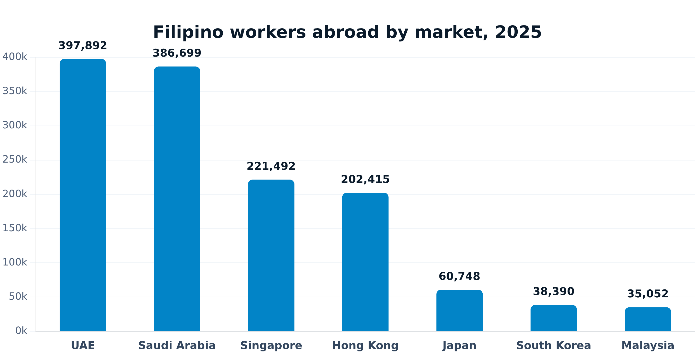
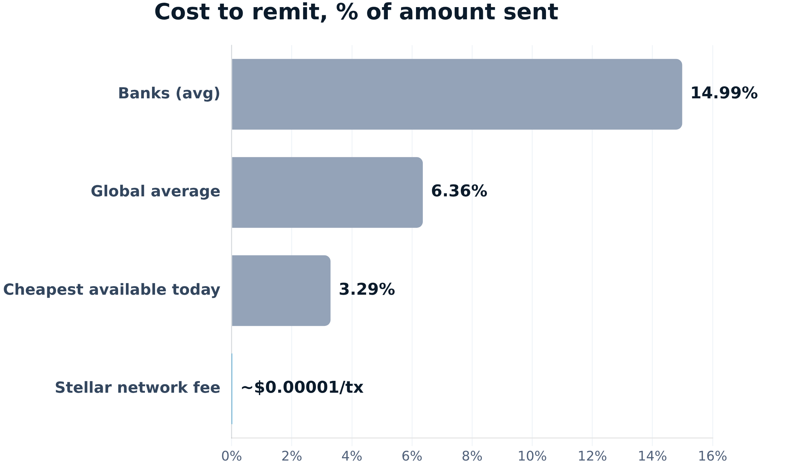

Stellar APAC Hackathon 2026 · Product pitch
Bakti
Plan salary-day support. Verify the transfer.
Filipino workers abroad, family in the Philippines
STELLAR MAINNET PRODUCTThe moment
“I meant to send it. The week got away from me.”
Maria works in Singapore, one of over 221,000 Filipino workers there. Payday comes. Some months she remembers to send money home, some months a long shift pushes it to next week.
She wants a standing plan she sets up once, then signs each month on a habit, not from memory.
Her mother, back home in the Philippines, has never used a banking app. What she actually wants is to walk in, show her ID, and leave with cash.
Today the recipient still needs a Stellar address, and Maria signs every transfer herself. Bakti does not send automatically. Cash pickup for her mother is the target, not built yet.
Corridor evidence
One anchor in the Philippines reaches every market Filipino workers send from

Only the receiving side needs a Stellar anchor. Wherever the sender is, they just need XLM/USDC sitting in their own wallet. Singapore's OFWs alone also account for 7.3% of all 2025 PH cash remittances, the #2 source country after the US.
Product today vs next
Plan, sign, and verify on-chain today
- Freighter + custom signed manageData session, not SEP-10
- Support-plan records; reminder day is metadata only
- XLM escrow/release with 60-ledger demo cadence
- Direct XLM/USDC to a recipient address the sender enters and confirms
- Horizon/RPC verification, SEP-7 link, recipient watcher
- Status ends at Verified on-chain
- Licensed provider onboarding, KYB/compliance, agreements
- SEP-1 + provider SEP-10 + hosted SEP-24
- KYC, quote/limits, approved deposit routing
- Provider transaction status and reference
- PHP cash-out and provider-confirmed collection
One simple flow
Sender → Stellar → Anchor → Receiver
Why Stellar; why one anchor is enough
One Philippines anchor serves every sending market
- Only the receiving side needs a Stellar anchor. A sender in the UAE, Saudi Arabia, Singapore, or anywhere else just needs XLM/USDC in their own wallet, bought on any exchange
- No separate integration per sending country, no separate deal per market
- The Philippines is the one place Bakti needs a licensed cash-out partner
- MoneyGram Ramps is real and live. Been running in the Philippines since October 2021, one of the first four countries when MoneyGram launched this with Stellar, alongside Canada, Kenya, and the US
- Funds land in MoneyGram's own Stellar account. The recipient just shows a reference number and photo ID to pick up cash, no wallet needed
- What's still pending is Bakti's own connection to it: an email is out, no reply yet, nothing's confirmed as a partner
Why Bakti, not the alternatives
Classic remittance is transactional. Bakti is a standing habit with on-chain proof.

Classic apps and bank transfers are one-off: no standing plan, no proof beyond a receipt, and the recipient still needs a bank account or a wallet of their own. Bakti's target is different on all three: no wallet needed on the recipient's side, a verifiable Stellar transaction the sender can point to, and a monthly habit instead of "did I remember this month." The network layer itself costs next to nothing; the number still missing is the anchor's own cash-out quote.
Business model + GTM
Hypotheses to test, not forecasts
- Transparent sender service fee within a licensed provider quote, the world average cost to remit is 6.36% (World Bank, Q3 2025); target is to sit meaningfully under that
- Provider referral/revenue share where permitted
- Employer, cooperative, or worker-community distribution
- No validated price, take rate, margin, or unit economics
- Interview Filipino workers abroad (any market) and family recipients in the Philippines
- Test planning/reminder value before automation
- Follow up on the MoneyGram Ramps email, without claiming a partnership
- Map how senders in each market actually acquire XLM/USDC today (exchange on-ramps in UAE, Saudi Arabia, Singapore)
- Run testnet usability studies for signing and address safety
Build status + ask
A working mainnet core, with an honest last-mile gap
- Contract itself: live on mainnet since 2026-07-12, creator key under review
- Separately: a fresh, judge-facing demo transaction is pending, to be signed before submission
- Direct payment verification and support-plan UI
- Current endpoints stop at Verified on-chain
- Warm introduction to MoneyGram Ramps, or feedback on the outreach email already sent
- Customer-discovery introductions among Filipino worker communities abroad
- Feedback on the planning job before adding automation
The target value, in one line
A sender signs. Her mother collects cash. No blockchain to learn.
A sender signs once a month. Her mother just walks in and picks up cash. No wallet, no app to install, nothing about blockchain to figure out. That part isn't built yet. It's exactly what the anchor connection is for.